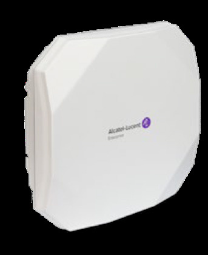

bp-ap1561-datasheet

R（触发场景）
- 室外园区 Wi-Fi 7：现网接入层只有 5GE/at，不想升级交换机与 bt 供电（C3）
- 6GHz 未开放地区室外部署：AFC 就绪、6G 软切 5G（C4）
- 与 AP1570（旗舰）/AP1360（Wi-Fi 6）做室外选型对比
I（核心理念)
室外 Wi-Fi 7 经济型：三服务射频 2x2x3（9.328Gbps），5GE 多千兆上联 + 仅 802.3at 23.64W——设计目标就是保护现网接入层投资（"without investing in upgrading the access layer"）；无扫描射频、无 BLE/Zigbee、无下联口；IP67 + 31dBm 级发射功率 + 内置宽口径扇区天线（P17，<<
A1（选型差异）
- vs AP1570：同为室外 2x2x3、9.328G； 1570 加 10GE combo（RJ45/SFP+ 光回传）、三频扫描、BLE 6.0、1GE PSE 下联、1572 外置天线版、bt 50W； 1561 只有 5GE/at 单口——要光回传/扫描/PSE 选 1570（C3）
- vs AP1360：1360 是 Wi-Fi 6 + SFP + PSE 下联 + 扫描 + BLE5.1；1561 是 Wi-Fi 7 + 6GHz，但接口能力反而少
- vs AP1261：1261 是 11ac 老将，1561 是其对位 Wi-Fi 7 替代
- 注意：1561 是纯三射频（无扫描无 BLE），与 1570 的五射频差距大
A2（规格速查表）
| 项目 | 规格 | 页码 |
|---|---|---|
| 射频架构 | 三服务射频：6GHz 2x2:2（5.76G，2SS EHT320，软件可切 5GHz）+ 5GHz 2x2:2（2.882G，2SS EHT160）+ 2.4GHz 2x2:2（688Mbps）；无扫描无 BLE（FTM 支持） | << |
| 聚合速率 | 9.328Gbps | << |
| MIMO/速率档 | MLO、OFDMA（多非连续 RU）、MU-MIMO、4096-QAM、512 压缩块确认、Triggered uplink access、TxBF；EHT20-320 | << |
| 频段 | 2.4G/5G 四段/6GHz 四段 | << |
| 以太网口 | 1x 多千兆 100M/1G/2.5G/5GE（802.3bz）Eth0，802.3at PoE，EEE，MACsec；无第二口/无 USB/无 SFP | << |
| PoE/供电 | 仅 802.3at，23.64W（无降级链也无余量）；无 DC 口 | << |
| USB-IoT | 无 | << |
| 蓝牙 | 无 BLE/Zigbee 射频 | << |
| 天线 | 内置宽口径扇区天线（H/V 双极化）：6.9dBi@2.4G / 8.0dBi@5G / 8.2dBi@6G；外置天线版无（对比 1572） | << |
| 发射功率 | 聚合 31.9dBm@2.4G / 31.0dBm@5G / 31.2dBm@6G（室外机型最高档，每链 22/20/20dBm 级）；巴西 24dBm | << |
| 工作温度 | -40°C ~ 65°C；湿度 10-90%；持续风 100MPH/阵风 165MPH | << |
| 防护 | IP67；工业级浪涌保护；抗阳光直射/持续潮湿 | << |
| Mount | 抱杆/壁装，套件另购（AP-MNT-OUT） | << |
| 容量 | 每射频 16 SSID；每射频 256 客户端，合计 768/AP | << |
| 尺寸重量 | 243x243x85mm，2500g；MTBF 953,235h（108.74 年） | << |
| 管理平台 | Terra 5K / Cirrus 12K / Express 集群 255；OV2500 兼容 4K；SNMP 仅 v2 | << |
| 安全 | TPM 2.0、WPA3 CNSA/SAE、OWE、DPI、MACsec Eth0、AFC（6GHz 标准功率就绪） | << |
| 订购 | OAW-AP1561-RW（禁 US, ME, Japan——注意含 ME）/ -US / -ME | << |
| 配件 | AP-MNT-OUT、POEO75U-1BT-X-R（室外 IP67 10GE bt Midspan） | << |
E（适用场景）
- 室外园区/停车场/堆场 Wi-Fi 7：5GE + at 现网直接用，保护接入层投资（C3，<<
>>） - 6GHz 未开放域：6G 软件切 5G 跑 2.4+5+5（C4，<<
>>） - 大功率 + 宽口径扇区天线：适合开阔区域单点覆盖
B（限制与坑）
- RW 版禁售写法 "not for use in US, ME, Japan"（含中东域，与其他型号不同，易误读，X19，<<
>>） - 无扫描射频、无 BLE/Zigbee、无 USB、无下联口、无 SFP：IoT 定位/回传供电/光回传全要上 1570 或 1360
- 仅 at 23.64W：供电零余量，PD 功率预算要留线损
- 5GE 上联需要接入交换机支持 802.3bz 5G 档；只有 GbE 时浪费
- SNMP 仅 v2（<<
>>）；管理规模数字需核实（X24，<< >>） - 套件另购（X20）；室外天线只有内置扇区一种形态
来源：bp-stellar-ap-datasheets fulltext.md p108-116；verified.md C3/C4/P17/P23/X19/X24/F1/F5
仅供内部学习使用 · 教材版权归 ALE Training Services 所有